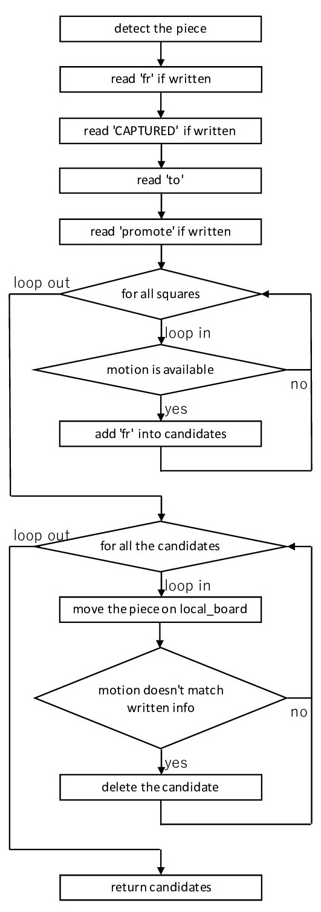

<html lang="ja">
<head>
    <meta charset="UTF-8">
    <meta name="viewport" content="width=device-width, initial-scale=1.0">
    <title>これであなたもチェスが作れる 6</title>
    <link rel="stylesheet" href="../stylesheet.css">
</head>
<body>
    <header>
        <div id="title">
            <h1>これであなたも</h1>
            <h1>チェスが作れる</h1>
        </div>
        <ul>
            <li><a href="../index.html">Stage 0&1</a></li>
            <li><a href="../stage2/index.html">Stage 2</a></li>
            <li><a href="../stage3/index.html">Stage 3</a></li>
            <li><a href="../stage4-1/index.html">Stage 4-1</a></li>
            <li><a href="../stage4-2/index.html">Stage 4-2</a></li>
            <li><a href="../stage5/index.html">Stage 5</a></li>
            <li><a href="#">Stage 6</a></li>
            <li><a href="../stage7/index.html">Stage 7</a></li>
            <li><a href="../stage8/index.html">Stage 8</a></li>
            <li><a href="../stage9/index.html">Stage 9</a></li>
        </ul>
    </header>

    <main>
        <section id="s6">
            <h1>Stage 6　入力を変換する</h1>
            <p>今回はプレーヤーに駒の動かし方のお伺いを立てていただいた情報から駒を動かす機能を作ります。前回の予告でも申し上げましたとおり、文字列操作と正規表現を使います。特に文字列の操作は必須の技能となりますので、知識が追いついていない人はまず勉強してから来てくださいな。</p>
            <p>それと棋譜の書き方も今一度覚えてください。これを知らないと今回何もできませんからね。</p>
            <p>今回扱うのは Board クラスの s_analyze メソッドです。プレーヤーが入れた棋譜は self.s に str 型で格納します。この self.s の文字列をもとに駒を動かしますよ。</p>
        </section>

        <section class="index">
            <h2>目次</h2>
            <p>
                <ul>
                    <li><a href="#s6-1">6-1　不要な文字の消去</a></li>
                    <li><a href="#s6-2">6-2　正規表現によるフォーマット</a></li>
                    <li><a href="#s6-3">6-3　動かす駒の判定</a></li>
                    <li><a href="#s6-4">6-4　移動元のヒントとなる情報の整理</a></li>
                    <li><a href="#s6-5">6-5　移動先とプロモーション</a></li>
                    <li><a href="#s6-6">6-6　移動元の候補</a></li>
                    <li><a href="#s6-7">6-7　移動元候補の検証</a></li>
                    <li><a href="#s6-8">6-8　標準フォーマット以外の入力</a></li>
                </ul>
            </p>
        </section>
        
        <section id="s6-1">
            <h2>6-1　不要な文字の消去</h2>
            <p>棋譜には、駒の動きを表すなくてはならない部分と、あってもなくても駒の動きがわかる部分とがあります。Q a x e6 ++ ! という場合を考えてみましょう。一番最後の "!" は記録している人が「これは妙手」とうなった手であることを表しています。駒の動きには一切関係ありませんから、文字列からは削除します。不要なのはこれだけではありません。文字列をよくみてください。なんならプログラムみたいに配列に格納するところも想像してみてください。空白文字が格納されますよね。ぶっちゃけいらないでしょ。ですから空白も消します。</p>
            <p>私のコードの先頭では空白文字を削除しています。文字列はリストのような振る舞いをするもののイミュータブル(書き換え不可能)ですから、del self.s[-1] のようなリスト操作はできません。代わりにやっているのが replace というもの。文字列中の第 1 引数の文字をすべて第 2 引数の文字に置き換えます。s_analyze メソッドの先頭では空白文字を空文字に置き換え、つまり空白を削除していることになります。</p>
            <p>次の if 文はバグを回避するために入れたものです。後で s の最後尾の文字を調べるんですが、仮に文字列に文字が入っていない (len(s) == 0) とすると、ここで「インデックス無効」とエラーを吐き出して強制終了されてしまいます。</p>
            <p>先ほど申し上げたような "!" や "?" などの文字も削除します。こうした文字は棋譜の文では末尾に着きますから、「一番末尾の文字が "!", "?" であれば削除」という手法をとっています。rstrip は引数の文字が文字列末尾にある間はずっと末尾を削り続け、残った文字列を返すメソッドです。またここでも強制終了を回避するため、文字列の長さが 0 になっていないか、文字を削除するたびに逐一確認しています。</p>
        </section>

        <section id="s6-2">
            <h2>6-2　正規表現によるフォーマット</h2>
            <p>正規表現 (regular expressions) というのは電話番号やメールアドレスに代表されるような「形が決まり切った文字列」を扱うものです。チェスの棋譜の書き方はまさしく定型表現ですから、正規表現の使い所としてはドンピシャなんですよね。「文字列がこの形なら検証してあげてもいいけど、少しでも違ったらボクは君のことを棋譜とは認めないよ」と、毅然とした態度で型にハマらない無法者を排除してくれます。なんて頼もしいんでしょう。</p>
            <p>ふつう、棋譜の文字列は先頭からこのような構成になっています。</p>
            <p>
                <ul>
                    <li>動かす駒 (R, N, B, ...)</li>
                    <li>移動元の位置のヒント (a, 3, ...)</li>
                    <li>相手の駒をとる (x)</li>
                    <li>移動先の座標 (a1, f5, ...)</li>
                    <li>プロモーション (=Q, =N, ...)</li>
                    <li>アンパッサン (e.p.)</li>
                    <li>チェックとチェックメイト (+, #)</li>
                </ul>
            </p>
            <p>こと移動先の座標については必須の情報です。動かす駒でさえポーンの場合は省略しますが、移動先を省略したら何をどこからどこへ動かすのか全く分かりませんから。ただこれは唯一の例外。基本的には「なくても問題はない」情報ばかりです。そう、0 回か 1 回の出現を表す "?" の表現が大活躍します。</p>
            <p>まずは動かす駒から取り掛かりましょう。選択肢は R, N, B, Q, K の 5 つ。私みたいに世話焼きな人はポーンを省略することを知らなかった人が必要以上に困惑しないように P を入れてあげるのもいいかもしれません。いずれにせよ、この大文字の 5 ないし 6 文字が先頭で認められます。ということで、先頭を表すキャレット "^" と一緒に</p>
            <p class="code">
                <code class="code">^[PRNBQK]?</code>
            </p>
            <p>とできます。私は P を入れましたが、入れなくても全く問題はありません。</p>
            <p>お次は移動元のヒントです。file は a から h の 8 つ、rank は 1 から 8 までのどれかで表しますので、動かす駒に続けて</p>
            <p class="code">
                <code>[a-h]?[1-8]?</code>
            </p>
            <p>ですね。</p>
            <p>相手の駒をとったか判別する文字に入ります。小文字の x (エックス)を用います。ここまでで</p>
            <p class="code">
                <code>r"^[PRNBQK]?[a-h]?[1-8]?[x]?"</code>
            </p>
            <p>という文になっていれば正解ですね。いや、他に書き方あるのかもしれませんが、まあまあ動けばいいじゃないの。</p>
            <p>今度は移動先の情報です。先ほども申しましたが、この情報は絶対に必要です。"?" をつけてはいけません。file が先、rank が後の順で</p>
            <p class="code">
                <code>[a-h][1-8]</code>
            </p>
            <p>と表せます。</p>
            <p>さあ、プロモーションです。「プロモーションはポーンの時だけ」とか難しいことは後で考えましょう。とりあえずこの正規表現は「書き方がなってない文字列を除外する」ためのものですから、とりあえずプロモーションだとわかればいい。それと、ポーンやキングには成り上がることはできませんから、その点お忘れなく。</p>
            <p>プロモーションと同時にアンパッサンを表す e.p. も書いちゃいましょうか。プロモーションとアンパッサンを両方同時にはできませんから、</p>
            <p class="code">
                <code>(=[RNBQ]|e.p.)</code>
            </p>
            <p>と、どちらか一方だけという形でいいんじゃないですか。</p>
            <p>最後にチェックとチェックメイトです。チェックは "+", チェックメイトは "#" で表します。ただ厄介なことに、ダブルチェック(2 箇所同時チェック)やトリプルチェックを "++", "+++" と表す流派があるようです。そいつらが</p>
            <p class="stress">「俺の指示した駒の動きとまったくちげーじゃねえか」</p>
            <p>と腹を立てないよう配慮しないといけません。</p>
            <p>ここまでですべてです。これ以上後ろに文字は続きませんから、最終文字を表す "$" で蓋してあげるのがいいんじゃないでしょうか。すべてひっくるめて正規表現こうなりました。</p>
            <p class="code"><code>r"^[PRNBQK]?[a-h]?[1-8]?[x]?[a-h][1-8](=[RNBQ]|e.p.)?[\++#]?$"</code></p>
            <p>プレーヤーが入力した self.s がこれに合致してるかは re.match(r"^[PRNBQK]?[a-h]?[1-8]?[x]?[a-h][1-8](=[RNBQ]|e.p.)?[\++#]?$", self.s) でわかります。後で合致している文を取り出すために、私のコードではこれを match という変数に格納しています。下に if match という条件文がありますが、まさしくそれが「正規表現に合致している場合」を表してます。</p>
            <p>条件文内の先頭、match.group() というのは正規表現を通過した文字列です。line という変数に格納して、この後たくさんいたぶりますから、そのつもりで。</p>
        </section>

        <section id="s6-3">
            <h2>6-3　動かす駒の判定</h2>
            <p>ここから先はざっとこんな形になっています。なんとなくでいいので頭の片隅にでも入れておいてください。</p>
            
            <p>ではこれを踏まえてコーディングしましょうか。棋譜には動かした駒の種類が書かれています。ポーンの場合は省略ですが、逆に言えば省略されていればポーンなので、line を一眼見ただけで動かす駒の種類はわかります。その情報を取り込みましょう。</p>
            <p>駒の種類は line の一番先頭に大文字で書かれます。その文字で場合分けして、新しく piece というパラメーターに駒の番号を入れます。IO.py の中で、この時のために ToggleType に str → int の変換機能をつけていますから、ぜひ有効活用しましょう(参照：<a href="../stage3/index.html#s3-3">3-3</a>)。</p>
            <p>line の先頭文字が駒の種類を表す大文字だった場合は、後々の作業を簡単にするため大文字を消しておきます。不要な情報を大量に残しておくのは、かえって現場が錯乱するもとです。いらない情報は積極的に抹消していきます。line[0] が小文字の場合は piece = PAWN としたら、あとはこのブロックでやることはありません。</p>
        </section>

        <section id="s6-4">
            <h2>6-4　移動元のヒントとなる情報の整理</h2>
            <p>次に現れる可能性があるのが移動元の file もしくは rank を表す英数字です。基本は両方とも書いてませんし、あってもどちらか一方です。ということで、「ない方が自然、あった場合に備える」というスタンスで解読していきます。file や rank が指定されていればそれぞれ frFILE, frRANK に格納しますが、指定がなければここには OVERSIZE が入ります。</p>
            <p>まずは面倒の少ない rank の場合から。<a href="#s6-3">6-3</a> の処理ですでに駒を表す文字については削除されていますから、移動元の rank について指定があるときは line の先頭が数字です。そこで line[0] について「数字かどうか」isdecimal を実行し、True であれば以下の操作を実行します。</p>
            <p> line 先頭が数字のときは、そこで指定されている rank 番号を frRANK に格納します。0 番スタートであることに注意してください。ToggleType の変換機能では、入力された数字をそのまま int にする以上に仕事しません。また file は指定なしですから、規定値は OVERSIZE です。最後に line を簡略化するために今解読した先頭文字を消去しておきます。直後に同じ文字が出現することはない(駒をとったことを表す "x" もしくは file を表すアルファベットが数字に先行)ため、lstrip をつかいます。</p>
            <p>次は file が指定されている場合です。このとき直後にもう一度アルファベットが続きますから、単に「先頭文字がアルファベット」という理由だけでは話が通りません。その後ろの文字も見ないと判断できませんね。もし後ろの文字が数字だとしたら、それは間違いなく適用外です。なので、</p>
            <p>
                <ul>
                    <li>1 文字目が a-h</li>
                    <li>2 文字目が a-x</li>
                </ul>
            </p>
            <p>という 2 つの条件が要ります。条件分中でやることは rank 指定の時とほぼ変わりません。frFILE に ToggleType を使って指定 file 番号を格納し、frRANK には指定なし OVERSIZE を入れておきます。その次ですが、line の先頭文字削除の方法が少し独特ですね。これについて解説しましょう。</p>
            <p>file 指定の場合、先ほども申し上げた通り 1 文字目と 2 文字目にアルファベットが連続します。そして時には同じ文字が連続することもあります。もし同じ文字が連続しているときに「先頭と違う文字が出るまで削除し続ける」lstrip を発動すると、移動先の file を示す 2 文字目のアルファベットまで消失してしまいます。ですからここでは「line の 2 文字目以降を line に再代入」しているのです。</p>
            <p>file も rank も指定されていない「その他」の場合は frFILE, frRANK 共に OVERSIZE です。何度も言いますが、ふつう両方とも OVERSIZE になります。</p>
            <p>次いで「相手の駒をとっているか」を判読します。ここまで来れば "x" の字は line 先頭まで来ていますから、line[0] == "x" によって場合分けが可能です。駒をとっていれば CAPTURED を True に、そうでなければ False にします。</p>
        </section>

        <section id="s6-5">
            <h2>6-5　移動先とプロモーション</h2>
            <p>さあ、駒の移動先を解読しましょう。6-4 までの作業によって、最初の line の形によらず、現時点で先頭 2 文字は移動先の file と rank を表します。ですから toFILE と toRANK に 6-4 と同じ要領で解読した番号を格納します。</p>
            <p>お次にプロモーションです。何よりの証拠が "=" ですから、この文字の存在だけでプロモーションの有無を判別して構いません。"=" があれば次の文字が成り上がる駒の種類を表しますので ToggleType を使って promote に格納してください。プロモーションしなければ promote の規定値は EMPTY とします。</p>
            <p>ここまでで大方必要な解読は終了しました。他のチェックやアンパッサンなどの情報は追々「指定文字が line に含まれているか」によって確認しますので、もう line から文字を削ることはしなくて結構です。</p>
        </section>

        <section id="s6-6">
            <h2>6-6　移動元の候補</h2>
            <p>我々の駒を動かすシステムは、移動元・移動先・プロモーションの 3 種類 5 つの引数を要求します。そのうち後ろ 2 種類は手に入れてあるので、これからは「どこの駒を動かすか」に全神経を集中させてコーディングします。コンピューター的に言えば移動元をすぐに特定できるような情報はほぼないに等しいですから、すべてのマスをシラミつぶしに探索し、これまでに得たあらゆる情報に合致する移動元を候補として上げなければいけません。それを格納するのが candidates です。この中に [file, rank] の形式で候補を追加していきます。</p>
            <p>まずは file を for 文にかけます。運よく frFILE にまともな情報があれば、if 文によって候補外れの file を外すことができますが、基本はこれに頼ってはいけません。同様に、次のループの rank も frRANK にそぐわないもののみを外します。</p>
            <p>2 重ループ内部でさらに候補を絞り込みます。まずマスに置かれた駒が自分ので、駒の種類も合致しているか。次にその駒の移動が可能か。とりあえずここまでクリアしたものを candidates に格納します。</p>
        </section>

        <section id="s6-7">
            <h2>6-7　移動元候補の検証</h2>
            <p>当然こんな生ぬるい絞り込みで候補の選定は終わりません。プレーヤーは動かす駒の絞り込みのために「駒をとった」とか「チェックメイトした」などの情報を棋譜に載せてきます。それらすべての要求に応えることなくいたずらに候補を返しては、プレーヤーの思っていた動きとは違う動かし方をしてしまう恐れがあります。そこで、今度は candidates に残っているすべての候補に基づいて local_board という仮想的な盤面上で駒を動かし、</p>
            <p>
                <ul>
                    <li>駒をとっているか</li>
                    <li>チェックしているか</li>
                    <li>チェックメイトしているか</li>
                    <li>アンパッサンしているか</li>
                </ul>
            </p>
            <p>を検証しています。これらのプレーヤーの指示にしたがっていない候補はすぐに candidates から下ろします。</p>
            <p>ループ内部で local_board に self を複製し候補の通りに駒を動かしたら、まずは駒をとっているか見ます。該当は CAPTURED が True もしくは e.p. の指定です。相手の駒をとっていることが確認されたら pass すなわち何もしないで if を離脱しますが、最後まで残ったものは相手の駒をとっていませんから candidates から抹消、reference を調整して for ループを続行させます。相手の駒の位置に移動する場合だけでなくアンパッサンも忘れずに検証してください。</p>
            <p>お次はチェックです。流派によっては記譜に書いた "+" の数でダブルチェック・トリプルチェックを指定してきます。ですから line の中の "+" の数が checkcount の示す盤面上でのチェックの数を上回っていたら、候補を candidates から削除、reference を調整、ループ続行という手筈です。</p>
            <p>"#" で表されるチェックメイトは単純に checkmatejudge の真偽だけで判断できます。なんて簡単なんでしょう。</p>
            <p>アンパッサンは「ポーンがナナメに移動しているのに、移動先に駒がない」という状態から判断します。これまた初心者に優しいねえ。</p>
            <p>これで候補が絞り込まれました。まず残っている候補が 1 つだけの場合は、move の引数の形に合わせて残った候補をリターンします。一方、候補が複数あるときは最初の候補だけをリターンします。一応ログでは「他に候補がある」と警告します。問題は候補がない場合です。プレーヤーの指定通りに駒を動かせませんので、「移動不可能」False をリターンすることになります。</p>
        </section>

        <section id="s6-8">
            <h2>6-8　標準フォーマット以外の入力</h2>
            <p>さあ、ここからは正規表現から漏れた可哀想な子たちを対処します。いますよ、それでもしっかり意味を持って役に立てる人たちが。このブロックでは line を定義していませんので、文字列はすべて self.s となります。</p>
            <p>まずは勝敗を表す場合です。チェスの棋譜で勝敗は</p>
            <p>
                <ul>
                    <li>白勝：1-0</li>
                    <li>黒勝：0-1</li>
                    <li>引分：1/2-1/2</li>
                </ul>
            </p>
            <p>と表します。これで投了ないし了承による引き分けを判断しますので、ぜひ入れておいてください。リターンはそれぞれ WHITE, BLACK, EMPTY です。標準フォーマットと異なり int で返します。また、白か黒が勝つときは必ず負ける側が投了する形でのみ許容されるようにしてください。これないと早い者勝ちで勝利宣言の奪い合いになりますからね。</p>
            <p>その次にキャスリングです。motionjudge でやったのと同じように、最初にプレーヤーから rank を判断し、あとでキングサイドとクイーンサイドの条件分岐を行います。リターンはキングの動きです。わからない場合は<a href="../stage4-1/index.html#s4-1-7">こちら</a>を参照してくださいね。</p>
            <p>ついにここまでに引っかからなかったものは手の施しようがありませんから、実行不可 False をリターンしてください。</p>
        </section>

        <section>
            <h2>次回予告</h2>
            <p>プレーヤーからの入力にも応じられるようになりましたし、いい加減遊べるようにしましょう。次回で 2 人で遊べるチェスの機能は大方完成になります。</p>
            <p><a href="../stage7/index.html">次回　Stage 7　ゲームを進める</a></p>
        </section>
    </main>

    <footer>
        <ul>
            <li>LAST EDITED: 2020/5/2</li>
            <li>
                <a href="https://github.com/Saito-Saito-Saito" target="_blank">このページの作成者のGitHub</a>
            </li>
            <li>
                <a href="https://twitter.com/zsops_n" target="_blank">このページの作成者のTwitter</a>
            </li>
            <li>
                <a href="#">トップに戻る</a>
            </li>
        </ul>
    </footer>
</body>
</html>